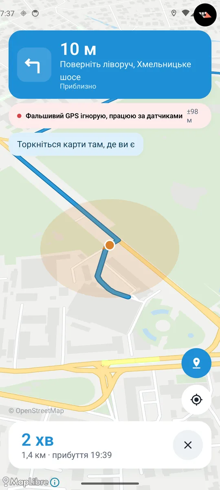

Навігатор, який знає, де ви, навіть коли GPS бреше
через датчики руху · камеру · офлайн-карту міста
Дея тримає вас на карті, коли сигнал GPS глушать або підмінюють. Вона рахує рух авто за датчиками телефона й камерою та звіряє його з офлайн-картою вашого міста.
Безкоштовно · Android 8.0 або новіший-
Старт. GPS ще працює
Відкрийте Дею перед поїздкою. Поки GPS у нормі, вона веде за ним і за хвилину-дві калібрує датчики й камеру під ваше авто й тримач.
GPS±3 м -
Тривога. GPS заглушили, а ви їдете далі
Звичайний навігатор тут сліпне. Дея веде далі, бо знає, як рухається авто і якими дорогами воно може їхати.
- Датчики рухугіроскоп і акселерометр
- Відстежують кожен поворот, розгін і зупинку.
- Камеразадня, за бажанням
- Дивиться на дорогу й вимірює швидкість. Без неї Дея теж працює, але з камерою позиція значно точніша.
- Офлайн-картаOpenStreetMap
- Дея перебирає тисячі можливих позицій, і кожна стоїть на справжній дорозі вашого міста.
-
GPS каже, що ви в аеропорту. Дея не вірить
Підміну видно одразу: плашка червоніє, а позиція лишається на вашій вулиці. Торкніться плашки, і Дея пояснить, чому не довіряє GPS.
- позиція за межами України
- не збігається з датчиками руху
- рух не збігається з доплерівською швидкістю
- позиція з’їжджає з доріг

-
Waze і Google Maps теж не губляться
Увімкніть у налаштуваннях Деї «Передавати мою позицію Waze та іншим застосункам». Коли GPS заглушено або підмінено, інші навігатори йдуть за Деєю. Щойно справжній GPS повертається, вони знову беруть його.
через Waze · Google Maps · інші карти на Android
Позиція передається лише всередині телефона й нікуди не надсилається.
-
Загубилися? Покажіть на карті, де ви
Торкніться кнопки з міткою, а потім карти там, де ви є. Дея продовжить звідти, а плашка покаже «Позицію задали ви».
Позицію задали ви±12 м
-
Перед першою поїздкою
Знадобиться тримач на лобовому склі або панелі. Інтернет потрібен лише раз, щоб завантажити карту міста.
-

Завантажте місто
Поки є інтернет. Далі все працює офлайн.
-

Закріпіть телефон
Екраном до себе, щоб задня камера дивилася на дорогу.
-

Почніть з GPS
Перші хвилини Дея калібрується під ваше авто.
-

Стежте за плашкою
Вона завжди каже, звідки ваша позиція.
-
-
Весь маршрут за 34 секунди
Хмара з тисяч можливих позицій, кожна на справжній дорозі. Що далі ви їдете, то точніше Дея знає, де ви.
-
Камера дивиться на дорогу, а не в інтернет
Зображення з камери ніколи не залишають ваш телефон. Дея не знає, хто ви, і не збирає, куди ви їздите.
- Кадри лишаються в телефоніАналізуються в пам’яті й одразу зникають. Нічого не записується й не надсилається.
- Без акаунтів і рекламиНемає реєстрації, рекламних мереж чи аналітики, яка стежить за вами.
- Працює без інтернетуПозиція й маршрути рахуються на телефоні. Мережа потрібна лише для карти.
-
Питання до водія
Чи потрібен інтернет?
Лише щоб завантажити карту свого міста. Далі Дея визначає місце й прокладає маршрут повністю офлайн.
Чи обов’язково вмикати камеру?
Ні. Без камери Дея працює на датчиках і карті та попереджає, що точність може бути нижчою. З камерою, спрямованою на дорогу, позиція значно точніша.
Який телефон підійде?
Смартфон на Android 8.0 або новішому з гіроскопом і акселерометром. Задня камера бажана. Майже всі сучасні телефони мають усе це.
Наскільки точно без GPS?
У місті, де багато поворотів, Дея зазвичай тримає вас на правильній вулиці. На довгих прямих дорогах похибка поступово росте, а щойно з’являється поворот чи справжній GPS, позиція знову уточнюється. Плашка завжди показує можливу похибку в метрах.
Чи сильно сідає батарея?
Камера й датчики працюють увесь час поїздки, тож у довгих поїздках краще тримати телефон на зарядці.
Чому саме «Дея»?
Від мему з вівцею, яка питає «Де я?». Тепер у неї є відповідь.
-
Кінцева Завантажте Дею
Завантажте Дею прямо з цього сайту. У Google Play вона з’явиться згодом.
Android 8.0 або новіший
- Завантажте файл кнопкою вище на телефоні з Android.
- Відкрийте його зі сповіщення або з папки «Завантаження».
- Дозвольте встановлення. Android попросить дозволу встановлювати застосунки з браузера: натисніть «Налаштування» й увімкніть «Дозволити з цього джерела».
- Натисніть «Встановити». Якщо Play Protect попередить про невідомий застосунок, оберіть «Усе одно встановити».
Оновлення теж з’являтимуться тут: просто завантажте й встановіть нову версію поверх старої. Усі версії